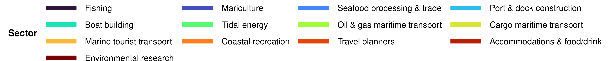

Livelihoods and Economies EWG 3.1
Early Look: Livelihoods & Economies (LE)
We plan to review our current estimates of LE scores at the Expert Working Group meeting 3.1 on July 16, 2026. This document is intended to provide attendees with an overview of the goal model and its inputs, and an early look at its outputs, leading up to the meeting. If you read through this and have minor methodological concerns, please flag them and bring them to the meeting. If you have major methodological concerns, please share them with me ahead of time (my email is smanos@nceas.ucsb.edu). If you cannot make it to the meeting but would like to discuss, I am happy to meet 1:1 before or after.
Please be advised that this document is intended for internal use only and informational purposes. It should not be interpreted as the final word or of peer-review quality.
Thank you for your continued engagement with this work. We look forward to discussing these scores with you on July 16th!
About the LE Goal
This goal measures jobs and revenue from marine related industries.
CORE DEFINITIONS
- Overall Goal: Measures jobs and revenue from marine related industries
- Two Subgoals:
- Livelihoods (LIV): Quality and quantity of marine related jobs
- Economies (ECO): Revenue from marine related sectors across coastal regions
Goal model
LE = average(LIV, ECO)
LIV is the average of number of jobs and quality of jobs:
- Number of jobs: Marine related jobs scaled to coastal population, compared to a reference point. Two reference options are shown for expert discussion:
- Option A (historical average): mean jobs per coastal resident across census years 2003, 2008, and 2013 for each region
- Option B (2019 census): each region’s 2019 Economic Census value (2018 in the adjusted census-year series)
- Quality of jobs: Employer social security contributions and other benefits per job (J300A + J400A from Censos Económicos), compared to the 90th quantile across regions and years (same in both scenarios)
ECO tracks marine related revenue (M000A from Censos Económicos), compared to either Option A (2003–2013 historical average revenue) or Option B (2019 Economic Census revenue).
Data come from INEGI Censos Económicos (2003, 2008, 2013, 2018, 2023) with coastal population adjustments for regions spanning both Gulf and Pacific coasts.
Region 2 data limitation: Overall LE is not reported (NA) for Region 2 (Western Midriff Islands). The municipality of San Quintín was incorporated on February 12, 2020; before that date it was part of Ensenada. Both historical Ensenada and current San Quintín span the Pacific and Gulf of California coasts, and most of the population is on the Pacific side. Because INEGI Censos Económicos are reported at the municipal level, the available data were not sufficient to reliably estimate Gulf-side marine jobs, job quality, or revenue for this region.
Background on the goal & decisions made
We assessed the LE goal as two subgoals, following OHI conventions and guidance from the Goalkeeper Group and Expert Working Group. The Livelihoods (LIV) subgoal captured the quantity and quality of marine-related jobs available to people living in Gulf of California (GoC) coastal regions, and the Economies (ECO) subgoal captured the revenue generated by marine-related sectors in those regions. We defined the ideal state for LIV as stable or increasing numbers of marine-related jobs of the same or higher quality over time, and the ideal state for ECO as maintained or increasing revenue from marine-related sectors over time.
We chose to include all major marine and Gulf-relevant economic sectors, including those not fully dependent on a healthy ocean, such as ports, maritime transport, and renewable energy infrastructure. We made this choice because omitting those sectors would have underrepresented real economic activity in the GoC and would have limited the Action pillar of the assessment from identifying governance or management gaps in those industries. We did not incorporate a sustainability multiplier in this preliminary assessment, though we identified it as a potential future refinement based on expert opinion and sector-specific management quality.
We built the assessment on microdata from the Censos Económicos (CE), conducted by INEGI, for census waves 2004, 2009, 2014, 2019, and 2024, which we aligned to data collection years 2003, 2008, 2013, 2018, and 2023. We restricted the extract to the six Mexican states bordering the Gulf of California (Baja California Sur, Baja California, Sonora, Sinaloa, Nayarit, and Jalisco) and obtained municipal-level establishment counts, activity codes, employment, benefits, and revenue for each wave. We chose the CE over alternatives such as the Encuesta Nacional de Ocupación y Empleo (ENOE) and the Indicadores Laborales para los Municipios de México (ILMM) because it offered a complete count of formally registered businesses, supported municipal-scale sector disaggregation, and let us measure employment, benefits, and revenue from the same establishments, reporting system, and quality control of the data.
We restricted our analyses to municipalities assigned to the nine predefined GoC OHI regions using a curated lookup table, and we addressed two administrative boundary changes in Baja California. San Felipe was created as its own municipality in 2021 and had previously been counted within Mexicali; we assigned it to Region 1 for continuity. Between the 2019 and 2024 waves, Ensenada was split into three municipalities, which caused a sharp decline in Region 2’s jobs, economic units, and revenue after disaggregation. Because of that, we treated Region 2 as not comparable on a temporal jobs or revenue basis for the 2023 data collection year and represented it in merged scores using only its LIV job quality component. For Region 1 in 2023, we excluded Mexicali, retained only San Felipe, and applied a coastal population adjustment factor of 1, since San Felipe was fully coastal.
We defined marine-related activities using a curated classification table that mapped INEGI activity codes to general and specific marine sectors, developed with input from the Goalkeeper Group and validated against the official CE activity catalog. The sectors spanned food provisioning (fishing, mariculture, seafood processing and trade), infrastructure (port and dock construction and management, boat building), tidal energy, marine and coastal shipping (oil and gas maritime transport, cargo and goods maritime transport), marine tourism (marine tourist transport, coastal recreation, travel planners, accommodations and food and drink), and marine research and consulting. We assumed activity in explicitly marine codes was fully Gulf relevant, and for tourism, recreation, travel planning, accommodations, food service, and environmental research and consulting, we assumed only the coastal share of activity was Gulf relevant and applied a coastal correction based on the proportion of coastal population vs full municipal population. We excluded sports fishing as its own sector because CE data could not isolate it, and classified it as an area of improvement for future work using alternative data sources; that said, sports fishing jobs are still incorporated into results through the coastal recreation, marine tourist transport, and fishing sectors, which it is likely classified under.
To harmonize the data, we standardized identifiers and core indicators across waves (total personnel employed, employer contributions to social security, other social benefits, revenue, total income, economic units, and establishment size stratum) and combined state-level files into a single long dataset. We then restricted that dataset to GoC municipalities and marine-related activities, and we resolved establishment size stratum and confidentiality coding using a consistent hierarchy so that each year, municipality, and activity combination was reduced to a single non-duplicated total.
Because some GoC regions span both the Gulf and Pacific coasts, and because several included sectors are not exclusively marine, we applied a coastal population adjustment derived from 2020 INEGI municipal population within 50 km of the GoC coastline relative to total regional population. We applied this adjustment to all sectors in Regions 3 and 4, and to these sectors in every region: coastal recreation, travel planners, accommodations and food and drink, and environmental research and consulting. The explicitly marine sectors in the remaining regions retained unadjusted values, and we set the adjustment to 1 for Region 1 in 2023.
We considered two aggregation strategies and selected region and year aggregation across all marine-related sectors combined, rather than separate region, sector, and year aggregation with sector-specific reference points. We made this choice because confidentiality suppression in 2019 and 2024 left many region, sector, and year combinations with insufficient or inconsistent data, and because weighted sector aggregation would have required additional assumptions that could make scores reflect data structure rather than real economic change. Under this approach, a region could score 100 even if some individual sectors declined, provided other sectors compensated at the aggregate level; we retained sector-level exploratory summaries for reporting and interpretation.
INEGI Economic Census variables used in LE
The LE assessment draws on variables from INEGI’s Censos Económicos (CE), harmonized across census waves into a single long-format dataset. Full variable definitions are in the INEGI CE 2019 data dictionary (English).
| Variable | Definition summary | Interpretation / description | Subgoal / indicator(s) used |
|---|---|---|---|
| J300A | Employer contributions to social security (IMSS etc.) for paid workers | Formalization and continued protection of minimum benefits (mandatory for employers to contribute. Based on salary of employee.) Employer contributions to social security schemes. These are all monetary contributions that the economic unit covered with its resources to social security institutions for the benefit of paid workers. | LIV (quality of jobs) (numerator, summed with J400A); Gulf-wide marine sector trends (job quality panel) |
| J400A | Other social benefits that are added on (private health/food/education/childcare) | Voluntary perks, not mandatory at all. Other social benefits. These are payments that the economic unit made to private institutions for the benefit of its workers or that it granted directly in kind to paid personnel, in addition to or as a supplement to wages and salaries, such as private medical services, food allowances, insurance premiums, educational services, study grants, and childcare. Excludes: employer contributions to social security schemes, purchase of equipment, uniforms, and work clothes; training costs; vacation bonuses; expenditures for sports and recreational activities; expenses for travel, per diem, and meals; in addition to all expenses reimbursable to the worker. | LIV (quality of jobs) (numerator, summed with J300A); Gulf-wide marine sector trends (job quality panel) |
| H000A | Total workers | Personnel employed by the company. This includes personnel hired directly by the company, whether permanent, temporary, or unpaid, unionized or non-unionized, who worked during the reference year for the economic unit, subject to its management and control, covering at least one-third of the working hours of the unit. Includes: personnel who worked outside the economic unit under its labor and legal control; pieceworkers; striking workers; persons on sick leave, vacation, or temporary leave. Excludes: pensioners and retirees; personnel on unlimited leave and personnel who worked exclusively for fees or commissions without receiving a base salary; as well as personnel from companies hired to provide services such as cleaning, gardening, or security, among others. | LIV (number of jobs) (numerator for jobs per coastal resident); LIV (quality of jobs) (denominator for benefits per job); Gulf-wide marine sector trends (jobs panel) |
| H010A | Total paid workers | Total paid personnel: This includes all persons who worked during the reference period and were contractually dependent on the economic unit, subject to its direction and control, in exchange for fixed and periodic remuneration. | Not used in current LE scores (noted for expert discussion as a more precise denominator for J300A + J400A per job) |
| H020A | Unpaid workers | Owners, family members, and other unpaid workers, total: These are persons who worked under the direction and control of the economic unit, covering at least one-third of the unit’s working hours, without receiving a regular fixed wage or salary. Includes owners, their family members, active partners, personnel working for the economic unit receiving only tips, social service providers, interns in the national employment system or in training programs, merit workers, and volunteer workers. Excludes persons who provided professional or technical services and charged fees for this; pensioners, retirees; and personnel supplied by another company. | Context only; not used in LE scoring |
| M000A | Total revenue from the supply of goods and services (millions of pesos) | Operating revenue from goods and services produced and sold; excludes financial income and extraordinary gains that can introduce volatility across census waves. Deflated to constant 2023 MXN before scoring. | ECO; Gulf-wide marine sector trends (revenue panel) |
| A800A | Total revenue, including financial and extraordinary income (millions of pesos) | Broader revenue measure than M000A. Available in the cleaned CE file but not used in LE because M000A better tracks productive marine economic activity. | Not used in LE scoring |
| UE | Economic units (establishments) in the activity | Count of formally registered economic units reporting in the CE for a given activity, municipality, and year. | Exploratory only; not used in current status scoring |
CE values for J300A, J400A, M000A, and A800A are reported in millions of pesos and converted to pesos before inflation adjustment.
Overall Livelihoods and Economies status
Reference scenarios for expert discussion
For number of jobs and ECO revenue, the charts below show two reference options in separate figures (historical reference above, 2019 reference below). Job quality uses the same Gulf-wide 90th-quantile reference in both scenarios.
| Component | Option A: 2003–2013 historical average | Option B: 2019 Economic Census |
|---|---|---|
| Number of jobs | Mean jobs per coastal resident across 2003, 2008, and 2013 | Jobs per coastal resident in the 2019 census wave (2018 in adjusted series) |
| ECO revenue | Mean marine revenue across 2003, 2008, and 2013 | Total marine revenue in the 2019 census wave (2018 in adjusted series) |
| Quality of jobs | 90th quantile across all regions and years (both scenarios) | Same |
The expert working group can compare how regional trajectories change under each reference and decide which baseline better reflects management expectations for stable or improving marine livelihoods and economies.
The overall Livelihoods and Economies (LE) current status score measures how well each OHI Gulf of California region supports marine-related employment and revenue. It combines two equally weighted subgoals: Livelihoods (LIV), covering job quantity and quality, and Economies (ECO), covering marine sector revenue. Scores are calculated at each INEGI Economic Census year (2003, 2008, 2013, 2018, and 2023) for eight of nine OHI marine regions; Region 2 is excluded due to insufficient municipal census data (see below). A score of 100 represents the reference point under the chosen scenario.
What scores mean for expert review: Higher LE scores indicate marine sectors are providing more jobs and revenue relative to the selected reference, with adequate job quality. Lower scores signal declining employment intensity, weaker benefits per job, or revenue below the reference. As friendly reviewers, you can compare regional lines under both reference options to see how sensitive conclusions are to the baseline choice.
Marine-related sectors included: fishing, mariculture, seafood processing and trade, port and dock construction/management, boat building, tidal energy, oil and gas maritime transport, cargo maritime transport, marine tourist transport, coastal recreation, travel planners, accommodations and food/drink, and environmental research/consulting.
Data sources: INEGI Censos Economicos (Economic Census) for marine-related economic units, with coastal population adjustments for regions spanning both Gulf and Pacific coasts.
Data processing: Revenue (M000A) and job benefits (J300A + J400A) are adjusted to constant 2023 MXN using national price indices. Coastal multipliers from 2020 population data scale Regions 3 and 4 (and tourism-related sectors that are not explicitly marine) to isolate jobs and revenue specific to coastal GoC areas. Mexicali is excluded from 2023 Baja California data; Region 1 uses San Felipe only.
Region 2: Overall LE is NA for Region 2 (Western Midriff Islands) because municipal-level Censos Económicos data cannot reliably separate Gulf-side marine employment and revenue from the broader Ensenada and San Quintín municipalities, which span both coasts. See the Region 2 data limitation note above.
Method: For regions with sufficient data, LE is the average of LIV and ECO.
\text{LE}_{r,t} = \begin{cases} \text{NA} & r = \text{Region\_2} \\ \frac{\text{LIV}_{r,t} + \text{ECO}_{r,t}}{2} & \text{otherwise} \end{cases}
Scores above 100 are capped at 100 at the component level.
How to read the charts: Each colored line is one OHI region across census years (not annual). The dashed line at 100 is the reference goal. Charts that depend on the jobs or revenue reference show two separate figures for each metric (historical reference above, 2019 reference below). Because data are available only at census intervals, lines connect five points; steep changes between points reflect multi-year shifts rather than year-to-year volatility.
Regional trajectories for overall LE
What it measures: Combined progress on marine-related jobs and revenue relative to historical reference conditions.
Data source: INEGI Censos Economicos (2003 to 2023).
Method: Average of LIV and ECO subgoals for regions with sufficient data. Region 2 is excluded (NA).
\text{LE}_{r,t} = \begin{cases} \text{NA} & r = \text{Region\_2} \\ \frac{\text{LIV}_{r,t} + \text{ECO}_{r,t}}{2} & \text{otherwise} \end{cases}
The charts below show overall LE current status by region across census years under both reference scenarios. Region 2 does not appear because scores are not reported. The dashed line at 100 marks the reference goal.
Regional and Gulf-wide trajectories for overall LE
What it measures: The same overall LE score shown at regional scale (charts above) and as a Gulf of California-wide average across all regions (charts below).
Data source: INEGI Censos Economicos merged outputs; Gulf average computed as the mean of regional LE scores at each census year, excluding Region 2.
Method: Regional scores follow the LE formula above. The Gulf-wide line averages the eight regions with reported LE scores (Region 2 excluded):
\text{LE}^{\text{GOC}}_{t} = \frac{1}{8}\sum_{r \neq \text{Region\_2}} \text{LE}_{r,t}
The regional charts compare OHI regions with reported scores. The Gulf-wide charts summarize the average trajectory across regions with sufficient data. For each view, the historical reference chart appears above the 2019 reference chart.
LIV subgoal
The Livelihoods (LIV) subgoal integrates the number of marine-related jobs (scaled to coastal population) and the quality of those jobs (employer social security contributions and other benefits per job). LIV is not reported for Region 2 because municipal-level census data for Ensenada and San Quintín cannot reliably isolate Gulf-side marine employment (see Region 2 data limitation above).
What scores mean for expert review: Higher LIV scores reflect more marine jobs per coastal resident and/or better employer-provided benefits per job. Compare whether job quantity and quality are moving in the same direction across regions and reference scenarios.
Data sources: INEGI Censos Economicos employment and remuneration variables (H000A, J300A, J400A, etc.) for marine-related economic units; INEGI population interpolated to census years with coastal multipliers.
Data processing: Jobs are summed across marine sectors, adjusted for coastal share, divided by interpolated coastal population, and compared to either the 2003–2013 per-capita average (Option A) or the 2019 Economic Census value (Option B). Job quality sums J300A and J400A per job (constant 2023 MXN) and compares to the Gulf-wide 90th quantile across all regions and census years (unchanged across scenarios).
Method:
\text{LIV}_{r,t} = \begin{cases} \text{NA} & r = \text{Region\_2} \\ \frac{\text{Jobs}_{r,t} + \text{Qual}_{r,t}}{2} & \text{otherwise} \end{cases}
LIV merged result
What it measures: Combined progress on the quantity and quality of marine-related employment.
Data source: INEGI Censos Economicos (2003 to 2023).
Method: Average of number-of-jobs and quality-of-jobs scores. Region 2 is excluded (NA).
\text{LIV}_{r,t} = \begin{cases} \text{NA} & r = \text{Region\_2} \\ \frac{\text{Jobs}_{r,t} + \text{Qual}_{r,t}}{2} & \text{otherwise} \end{cases}
LIV subcomponents
Number of jobs
What it measures: Marine-related jobs per coastal inhabitant relative to a regional reference point.
What scores mean for expert review: A score of 100 means jobs per coastal resident meet or exceed the reference. Lower scores indicate marine employment intensity has declined relative to coastal population.
Data source: INEGI Censos Economicos total employment (H000A) in marine-related sectors; INEGI municipal population interpolated to census years and adjusted with coastal population multipliers for regions spanning Gulf and Pacific coasts.
Data processing: Jobs aggregated by region and census year following coastal adjustment logic: Regions 3 and 4 scaled by Gulf coastal population share; tourism sectors (coastal recreation, travel planners, accommodations/food/drink, environmental research) scaled in all regions. Mexicali excluded from 2023; San Felipe represents Region 1. Region 2 is not scored because San Quintín (incorporated February 12, 2020) and historical Ensenada span both Pacific and Gulf coasts with most population on the Pacific side, preventing reliable Gulf-side job estimates from municipal census data.
Method (Option A, historical average): Jobs per coastal population in year t divided by the average jobs per coastal population from 2003, 2008, and 2013, capped at 100.
\text{Jobs}^{A}_{r,t} = \min\left(100,\ \frac{(J^{\text{marine}}_{r,t} / P^{\text{coastal}}_{r,t})}{\overline{J^{\text{marine}}/P^{\text{coastal}}}_{r,\,2003\text{-}2013}} \times 100\right)
Method (Option B, 2019 census): Jobs per coastal population in year t divided by the 2019 Economic Census value for that region (census year 2018 in the adjusted series), capped at 100.
\text{Jobs}^{B}_{r,t} = \min\left(100,\ \frac{(J^{\text{marine}}_{r,t} / P^{\text{coastal}}_{r,t})}{(J^{\text{marine}}/P^{\text{coastal}})_{r,2019}} \times 100\right)
Raw marine-related jobs by region
This chart shows unscaled job counts (after coastal adjustments) before conversion to current status scores. Use it to see absolute employment levels across census years. Values reflect total H000A summed across all marine sectors per region. Lines connect census years 2003, 2008, 2013, 2018, and 2023 only. Region 2 values should not be interpreted because municipal census data cannot reliably separate Gulf-side employment.
Quality of jobs
Understanding J300A and J400A
We use J300A + J400A per job (deflated to constant 2023 MXN, divided by H000A) as our job quality metric rather than total remuneration or salary because CE sector aggregation can be distorted by outliers; for example, one resort general manager’s high salary could inflate average remuneration even when most workers in that municipality and sector are in lower-wage roles.
J300A: employer contributions to social security (mandatory)
In INEGI’s CE, J300A aggregates all monetary contributions an economic unit paid from its own resources to social security institutions on behalf of paid workers (expressed in millions of pesos per activity, municipality, and year). This captures employer-side contributions only, not the worker’s portion, and covers IMSS, ISSSTE, and other applicable institutions, not just IMSS.
Mexico’s mandatory social security system (Ley del Seguro Social) requires employers to register formal employees and make monthly contributions calculated on the Base Contribution Salary (SBC), integrated salary including wages, bonuses, and recurring payments, covering work-risk insurance, illness and maternity, disability and life, retirement, and childcare. Because contributions scale with registered wages and headcount, J300A proxies both formal wage levels and degree of labor formalization within a sector or location.
Compared to the United States, where employer FICA contributions are roughly 7.65% of wages (Social Security + Medicare) with no bundled healthcare mandate, Mexico’s employer burden typically runs 20–30%+ of SBC depending on salary and industry risk class, and bundles healthcare into payroll contributions. J300A therefore captures something broader than a US “employer payroll tax”, closer to payroll taxes plus employer health coverage combined. Care quality through IMSS varies, but sustained contributions mean workers retain at minimum access to healthcare, disability protection, retirement savings, and maternity benefits.
J400A: other social benefits (voluntary)
J400A captures payments to private institutions or in-kind benefits granted directly to paid personnel beyond wages and mandatory J300A contributions: private medical top-ups, food vouchers, insurance premiums, educational services, study grants, and childcare. These are entirely voluntary and can vary sharply with employer circumstances. J400A is typically 3–10× smaller than J300A and more volatile across regions and years, especially in Regions 3, 4, and 9, because voluntary benefits concentrate among a small number of large establishments.
Why we add them together
J300A reflects maintenance of formal wage levels and legal employment status; sustained contributions indicate workers retain access to IMSS healthcare, disability and life insurance, retirement savings, and maternity protections. J400A reflects whether employers sustain voluntary investments above the legal minimum. Together they measure relative maintenance of employment quality against the Gulf-wide 90th quantile reference, not an absolute living-wage standard.
Denominator note: Benefits are divided by H000A (total employed personnel) in the current LE model, consistent across all census years in the cleaned file. H010A (paid personnel only) would be a more precise denominator because J300A and J400A apply to paid workers; we note this for expert discussion. H000A includes unpaid owners and family workers who do not generate J300A/J400A, which can slightly lower per-job benefit values.
Interpretive nuances for expert review:
- Rising (J300A + J400A) per job in constant pesos may reflect real wage growth, increased formalization, industry mix shifts toward higher-risk or higher-wage sectors, or growing voluntary benefits.
- Falling values may indicate wage stagnation, thinner supplementary benefits, or growth in lower-wage formal jobs at the margin.
- Mexico’s 2021 outsourcing reform (reforma de subcontratación) may have increased both contributions and H010A headcounts around the 2024 census wave; some year-to-year movement may reflect legal reorganization rather than underlying compensation change.
- We did not use total remuneration or salary directly because sector-level aggregation is sensitive to high-earning outliers that do not represent typical worker conditions.
What it measures: Employer social security contributions and other social benefits per marine-related job (J300A + J400A, in constant 2023 pesos) relative to the 90th quantile across all regions and census years.
What scores mean for expert review: Higher scores indicate employers provide more social security and in-kind benefits per worker, approaching the best-performing region-years in the Gulf. Lower scores suggest thinner benefit packages relative to the Gulf-wide 90th quantile reference.
Data source: INEGI Censos Economicos remuneration variables J300A (employer social security contributions) and J400A (other social benefits) for marine-related economic units.
Data processing: J300A and J400A summed and deflated to constant 2023 MXN, divided by H000A per region and census year, then compared to the pooled 90th quantile reference.
Method: Benefits per job divided by the Gulf-wide 90th quantile reference, capped at 100.
\text{Qual}_{r,t} = \min\left(100,\ \frac{(J300A_{r,t} + J400A_{r,t}) / H000A_{r,t}}{Q_{90}} \times 100\right)
where Q_{90} is the 90th quantile of (J300A + J400A) / H000A across all regions and census years.
ECO subgoal
The Economies (ECO) subgoal tracks total marine-related operating revenue relative to a regional reference point. It reflects the economic scale of marine sectors without double-counting financial or extraordinary income. ECO is not reported for Region 2 for the same municipal data limitations described above.
What scores mean for expert review: Higher ECO scores indicate regional marine revenue meets or exceeds the selected reference. Lower scores signal economic output below that reference, an aspect worth discussing with the expert working group.
Data sources: INEGI Censos Economicos variable M000A (total revenue from supply of goods and services, in constant 2023 pesos) for marine-related economic units, with coastal adjustments.
Data processing: M000A deflated to constant 2023 MXN; coastal multipliers applied to Regions 3, 4, and tourism-related sectors; aggregated by region and census year.
Method (Option A, historical average): Current revenue divided by the mean revenue from 2003, 2008, and 2013, capped at 100.
\text{ECO}^{A}_{r,t} = \min\left(100,\ \frac{M000A_{r,t}}{\overline{M000A}_{r,\,2003\text{-}2013}} \times 100\right)
Method (Option B, 2019 census): Current revenue divided by the 2019 Economic Census revenue for that region (census year 2018), capped at 100.
\text{ECO}^{B}_{r,t} = \min\left(100,\ \frac{M000A_{r,t}}{M000A_{r,2019}} \times 100\right)
ECO result
What it measures: Marine-related operating revenue relative to the regional reference (historical average or 2019 census, depending on figure).
Data source: INEGI Censos Economicos M000A for marine-related sectors (fishing, mariculture, seafood processing/trade, port/dock construction, boat building, tidal energy, oil/gas maritime transport, cargo maritime transport, marine tourist transport, coastal recreation, travel planners, accommodations/food/drink, environmental research/consulting), adjusted to constant 2023 pesos.
Method: Total marine revenue in year t divided by the reference value for that region. Scores at or above the reference receive 100; lower values reflect proportional reductions. The chart shows both reference options.
Raw marine-related revenue by region
This chart shows total operating revenue in constant 2023 MXN before current status scoring. Use it to compare absolute economic scale across regions and census years. Revenue reflects M000A summed across marine-related sectors (fishing, mariculture, seafood processing/trade, port/dock construction, boat building, tidal energy, oil/gas maritime transport, cargo maritime transport, marine tourist transport, coastal recreation, travel planners, accommodations/food/drink, environmental research/consulting) after coastal adjustments. Region 2 values should not be interpreted because municipal census data cannot reliably separate Gulf-side revenue.
Gulf-wide marine sector trends
These plots use the cleaned CE activity file from script 1, with the same coastal population adjustments applied in scripts 2 to 4. Jobs are coastal-adjusted H000A totals summed across all OHI regions. Job quality is (J300A + J400A) in constant 2023 MXN per job. Revenue is coastal-adjusted M000A in constant 2023 MXN. Lines are colored by marine sector.
Sector color key

One figure with three panels: total jobs, benefits per job, and total revenue, each summed across all OHI regions. Use the sector color key above to read the lines in each panel.